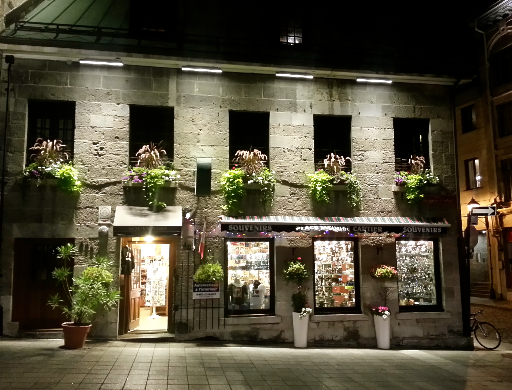

Genuine French Cuisine
Original recipes from our French Grandma, made just for you.
Gourmet Meals
Enjoy our delicious selection of mouth-watering appetizers, entrees, and desserts.
Charming Ambiance
Enjoy the delightful candlelit atmosphere in our 500-year-old hand-crafted stone building.
Get Answers to Homework Questions!
To your right are tabs with answers to all the homework questions for this assignment.